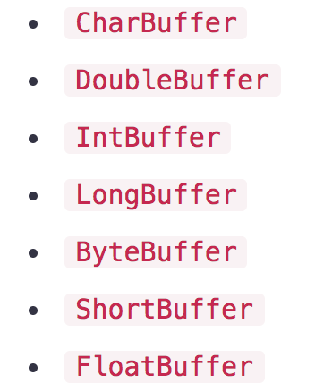

Kafka源码分析（十）——Producer：NIO通讯——写请求拆包
通过前面章节的学习，我们已经知道了Kafka客户端在发送消息时，最终是通过底层的NIO组件将消息写入到Channel的ByteBuffer中的。
那么，这里就要思考一个问题：如果Kafka客户端的一次Write操作没有把全部的数据都发送给Broker，此时该如何处理的呢？其实这就是典型的拆包问题，也就是说本来应该一个数据包就把所有数据发送给Server的，结果拆成了很多个包。
操作系统在发送TCP数据的时候，底层会有一个缓冲区(例如1024字节)，如果一次请求发送的数据量没达到缓冲区大小，TCP会将本来多个不同的请求合并为一个请求发送，这就形成了粘包问题；如果一次请求发送的数据量较大，超过了缓冲区大小，TCP就会将本来是一个的请求拆分为多个发送，这就是拆包问题。
Kafka客户端解决拆包和粘包问题的思路是：将消息分为头部和消息体，在头部中保存整个消息体的大小，发送消息时先发送消息头，再发送消息体；在读取消息时，只有读取到足够长度的消息之后才算是读到了一个完整的消息。
一、ByteBuffer
为了更好的讲解Kafka客户端NIO组件的“拆包”问题，我得先来讲解下Java NIO中的ByteBuffer，纯粹是照顾下新手童鞋，你们也可以自己去找本Java方面的书去看下Java NIO部分，比如《Core Java》，或者参考我的另一个专栏——《透彻理解Java网络编程》。
1.1 Buffer
缓冲区是用来和NIO通道Channel进行交互的，包括从通道读取数据，或者将数据写入到Channel中。
缓冲区的本质上是一块既可以写入数据也可以从中读取数据的内存，这块内存被包装成NIO Buffer对象，并提供了一组方法，用来方便的访问这块内存。 对于每种Java原始类型，都对应一种Buffer类型，我们最常用的就是其中的ByteBuffer：

Buffer有四个重要的属性： capacity、position、limit、mark ，其中position和limit在读模式和写模式下含义有所不同：
- capacity：Buffer的固定大小值；
- position：表示当前的读/写位置的索引（从0开始），当将Buffer从写模式切换到读模式时（
flip方法），position会被重置为0； - limit：读写操作都不能越过这个下标。写模式下，默认等于capacity，表示能写入的数据上限；读模式下，表示最多能读多少数据；
- mark：为某一读过的位置做标记，便于某些时候回退到该位置。调用mark()会将mark设为当前的position的值，以后调用reset()会将position属性设置为该mark的值。
上述属性值恒满足以下条件：
0 <= mark <= position <= limit <= capacity
举个例子理解下，假设一个缓冲区容量capacity是10，开始指针position指向0。然后写入6个字节数据，写完后，下标0、1、2、3、4、5有数据，指针指向6，即当前position=6。此时，用limit(6)方法将当前位置设为EOF位置，那么，读数据的时候，读到EOF位置就结束了。
1.2 核心方法
我们再来看下Buffer的核心方法：
clear()
把position设为0，把limit设为capacity，一般在把数据写入Buffer前或清空Buffer时调用。
flip()
把limit设为当前position，把position设为0，一般在从Buffer读出数据前调用。
rewind()
把position设为0，limit不变，一般在需要重写数据时调用。
compact()
将position与 limit之间的数据复制到Buffer的开始位置，复制后position = limit - position，limit = capacity。但如果position 与limit 之间没有数据的话，就不会进行复制。
mark()
标记Buffer中的一个特定position。
reset()
通过调用Buffer.reset()方法恢复到上一次mark标记的position。
1.3 读写过程
最后，用两张网上的图来说明下一般情况下，Buffer的读写过程。
（1）写模式下，往buffer里写一个字节，并把postion移动一位，写模式下默认limit与capacity相等：

（2）写完数据，需要开始读的时候，将postion复位到0，并将limit设为当前postion。
（3）从buffer里读一个字节，并把postion移动一位，上限是limit：

二、写消息
分析完了Buffer，接着我再带大家来回顾下Kafka消息发送的流程，这次主要关注底层通讯组件。
2.1 ByteBuffer封装
首先，我们来看发送给Broker的Send请求对象的结构。
（1）Sender线程将要发送到某个Broker的所有消息封装成一个Send请求对象；
// Sender.java
private void sendProduceRequest(long now, int destination, short acks, int timeout, List<RecordBatch> batches) {
// ...
String nodeId = Integer.toString(destination);
ClientRequest clientRequest = client.newClientRequest(nodeId, requestBuilder, now, acks != 0, callback);
client.send(clientRequest, now);
}
// NetworkClient.java
private void doSend(ClientRequest clientRequest, boolean isInternalRequest, long now) {
//...
String nodeId = clientRequest.destination();
AbstractRequest request = null;
AbstractRequest.Builder<?> builder = clientRequest.requestBuilder();
request = builder.build();
// 封装成Send请求对象
Send send = request.toSend(nodeId, header);
}
（2）Kafka客户端每一次向Broker发送请求，本质就是发送这个Send对象。而Send对象内部封装了ByteBuffer：
// AbstractRequest.java
public Send toSend(String destination, RequestHeader header) {
return new NetworkSend(destination, serialize(header, this)); //Send的实现类NetworkSend
}
// 根据请求头和请求体，创建一个ByteBuffer
public static ByteBuffer serialize(AbstractRequestResponse header, AbstractRequestResponse body) {
ByteBuffer buffer = ByteBuffer.allocate(header.sizeOf() + body.sizeOf()); //分配空间
header.writeTo(buffer);
body.writeTo(buffer);
buffer.rewind(); //postition置0，limit不变
return buffer;
}
可以看到，ByteBuffer的大小是根据消息的数据大小确定的，写完数据后，会调用rewind()方法，也就是说将position置0。
（3）接着，计算ByteBuffer的大小，将size结果封装成一个新的ByteBuffer，然后封装成一个NetworkSend对象。
// NetworkSend.java
public class NetworkSend extends ByteBufferSend {
public NetworkSend(String destination, ByteBuffer buffer) {
super(destination, sizeDelimit(buffer));
}
private static ByteBuffer[] sizeDelimit(ByteBuffer buffer) {
return new ByteBuffer[] {sizeBuffer(buffer.remaining()), buffer};
}
// 新建一个ByteBuffer，总共4个字节，值就是之前写入的数据总大小
private static ByteBuffer sizeBuffer(int size) {
ByteBuffer sizeBuffer = ByteBuffer.allocate(4);
sizeBuffer.putInt(size);
sizeBuffer.rewind();
return sizeBuffer;
}
}
// ByteBufferSend.java
public class ByteBufferSend implements Send {
private final String destination;
private final int size;
protected final ByteBuffer[] buffers;
private int remaining;
private boolean pending = false;
public ByteBufferSend(String destination, ByteBuffer... buffers) {
this.destination = destination;
this.buffers = buffers;
for (ByteBuffer buffer : buffers)
remaining += buffer.remaining();
this.size = remaining;
}
}
从上述的代码可以看出，最终发送出去的消息的前4个字节表示消息内容的大小，后面跟着的才是消息内容。这个非常重要，和拆包有关。
2.2 消息发送
消息的发送是通过Selector.poll()方法，内部调用了KafkaChannel.write()方法：
// Selector.java
private void pollSelectionKeys(Iterable<SelectionKey> selectionKeys, boolean isImmediatelyConnected,
long currentTimeNanos) {
if (channel.ready() && key.isWritable()) {
// 调KafkaChannel.write()方法
Send send = channel.write();
}
}
// KafkaChannel.java
public Send write() throws IOException {
Send result = null;
// 注意，如果发生拆包，send方法返回false，也就是result返回false
if (send != null && send(send)) {
result = send;
send = null;
}
return result;
}
private boolean send(Send send) throws IOException {
// 写消息到SocketChannel
send.writeTo(transportLayer);
// 如果消息写入完成
if (send.completed())
// 取消对OP_WRITE事件的关注
transportLayer.removeInterestOps(SelectionKey.OP_WRITE);
return send.completed();
}
最终，通过ByteBufferSend.writeTo完成数据往SocketChannel的写入。注意，由于拆包问题的存在，可能只发送了部分数据，此时remaining>0，ByteBufferSend用一个remaining字段标识剩余字节数：
// ByteBufferSend.java
public class ByteBufferSend implements Send {
private final String destination; // 目标Broker
private final int size; // 数据大小，即buffers中每一项的大小
protected final ByteBuffer[] buffers; // 包含两部分：数据头（4字节）和数据体
private int remaining; // 剩余待写入字节
private boolean pending = false;
public ByteBufferSend(String destination, ByteBuffer... buffers) {
this.destination = destination;
this.buffers = buffers;
for (ByteBuffer buffer : buffers)
remaining += buffer.remaining();
this.size = remaining;
}
@Override
public long writeTo(GatheringByteChannel channel) throws IOException {
// 写入channel，返回写入成功的字节数
long written = channel.write(buffers);
if (written < 0)
throw new EOFException("Wrote negative bytes to channel. This shouldn't happen.");
// 剩余待写字节数
remaining -= written;
pending = TransportLayers.hasPendingWrites(channel);
// 返回本次写入成功的字节
return written;
}
}
而在KafkaChannel完成消息写入后，有一个判断，判断Send请求里的数据是否全部发送完了，如果发送完了就取消对OP_WRITE事件的关注：
// 如果消息写入完成
if (send.completed())
// 取消对OP_WRITE事件的关注
transportLayer.removeInterestOps(SelectionKey.OP_WRITE);
// ByteBufferSend.java
public boolean completed() {
return remaining <= 0 && !pending;
}
所以，如果发生了拆包，KafkaChannel的write方法会返回null，并且KafkaChannel并不会把自己缓存的Send请求置为null：
// KafkaChannel.java
private Send send;
public Send write() throws IOException {
Send result = null;
// 注意，如果发生拆包，send方法返回false，也就是result返回false
if (send != null && send(send)) {
result = send;
send = null;
}
return result;
}
那么，在下一轮的Sender.run()中，会判断上一次针对某个Broker的请求是否已经发送完毕：
// Sender.java
Iterator<Node> iter = result.readyNodes.iterator();
long notReadyTimeout = Long.MAX_VALUE;
while (iter.hasNext()) {
Node node = iter.next();
if (!this.client.ready(node, now)) { // 判断是否Broker就绪
iter.remove(); //没有就绪就移除掉
notReadyTimeout = Math.min(notReadyTimeout, this.client.connectionDelay(node, now));
}
}
// NetworkClient.java
public boolean isReady(Node node, long now) {
return !metadataUpdater.isUpdateDue(now) && canSendRequest(node.idString());
}
private boolean canSendRequest(String node) {
return connectionStates.isReady(node) // Broker连接状态就绪
&& selector.isChannelReady(node) // Channel连接就绪
&& inFlightRequests.canSendMore(node); // 未响应请求判断
}
核心是三个条件的判断，我们看关键的最后一个判断inFlightRequests.canSendMore(node)，意思是如果“未响应请求队列”中的最近发送的那个请求没有completed()，就认为不能往该Broker继续发送请求：
// InFlightRequests.java
public boolean canSendMore(String node) {
// 获取未响应请求队列
Deque<NetworkClient.InFlightRequest> queue = requests.get(node);
return queue == null
|| queue.isEmpty()
|| (queue.peekFirst().send.completed() && queue.size() < this.maxInFlightRequestsPerConnection);
}
为什么不能继续往该Broker发送？因为我们最近发送的那个Send请求发生了拆包，Send请求还缓存在KafkaChannel里面，如果再发送会导致重复请求，所以直接要把这个Broker节点移除点，那么在本轮的Selector.poll()中就会发送缓存的那个Send请求，直接它的所有数据包发送完成。
三、总结
本章，我对Kafka客户端对消息发送的“拆包”处理的底层原理进行了讲解。总结一下，Kafka的核心处理思路有以下几点：
- 对每一个Broker要发送的消息，封装成一个NetworkSend请求，请求包含两部分：请求头和请求体，请求头共4字节，标识着请求体的大小；
- Kafka通过计算NetworkSend请求的remaining字段——待发送字节数，判断是否发送完了所有数据；
- 如果针对该Broker的请求没有一次性发送完成，那么就不会移除KafkaChannel对该请求的缓存，同时在下一次Sender线程的轮询过程中，不会针对该Broker生成新的NetworkSend请求，而是利用KafkaChannel缓存的NetworkSend请求，再次发送剩余字节，直接全部发送完成。